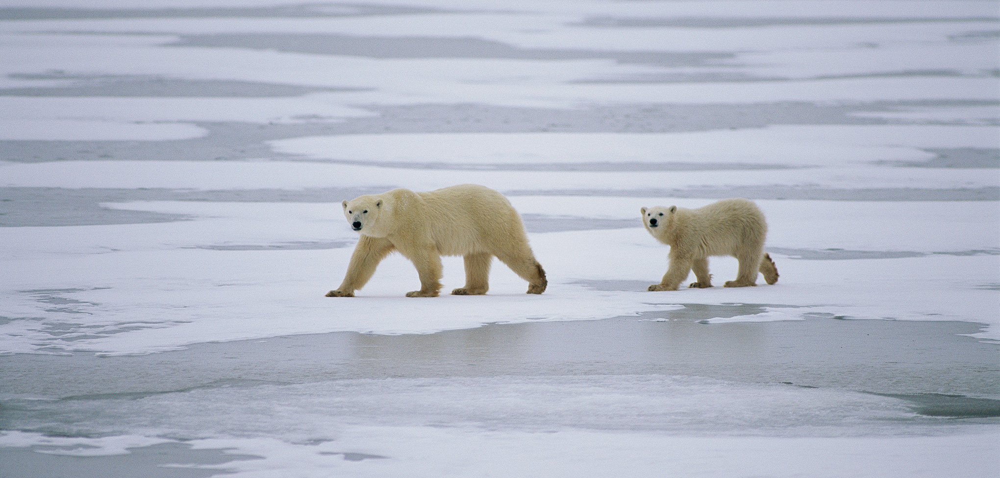
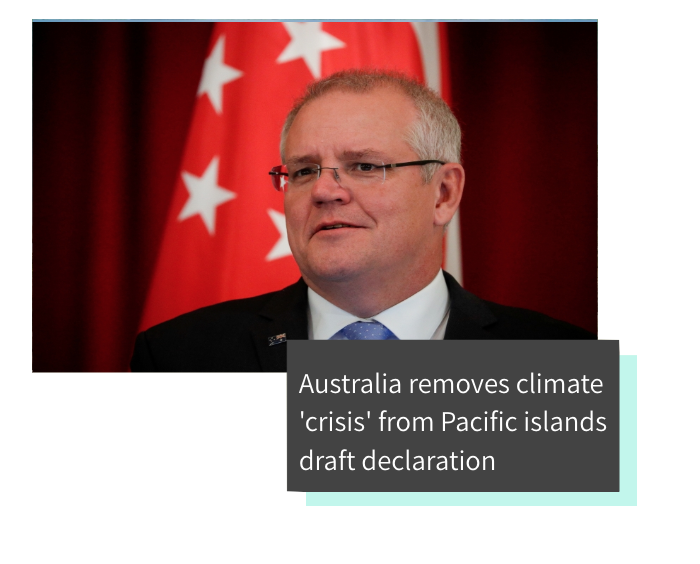
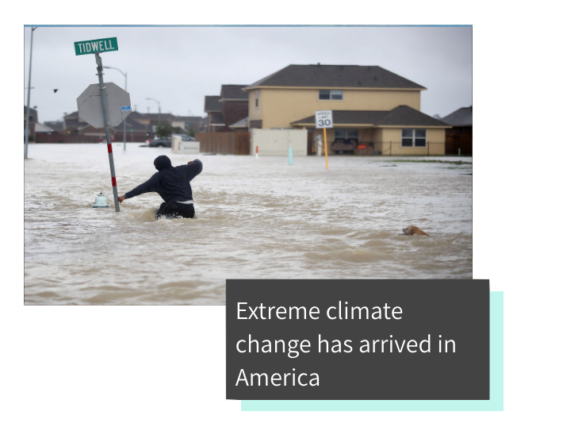
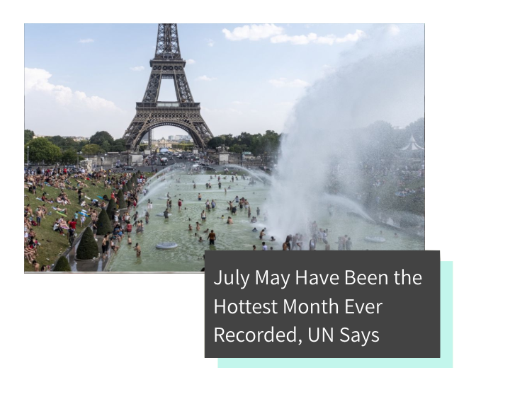

Climate Change
back to topics
"As human beings, we are vulnerable to confusing the unprecedented with the improbable.
In our everyday experience, if something has never happened before, we are generally safe in assuming it is
not going to happen in the future, but the exceptions can kill you and climate change is one of those exceptions."
-Al Gore

So you want to learn about climate change.
Despite the
facts, some people don't believe in it. But it's there. Global warming is consistently ranked high on lists for the top threats to humanity, and that's for a reason. Between rising sea levels and temperatures, extreme weather conditions, and melting glaciers, climate change is undeniable, and its effects will only hurt the environment more.
The Causes
Global warming, one of the most recognized effect of climate change, is largely caused by human activity. Because of increased greenhouse gasses in our atmosphere due to increased factory use and vehicles that burn an excessive amount of fossil fuels, as well as agriculture and farming, industries in which livestock emit carbon dioxide in copious amounts. In addition, deforestation has meant that less of the carbon dioxide released by these activities is absorbed by trees.
The Effects
Most people who don't believe in climate change have this stance because they don't feel its effects directly affecting them, but regardless, the large-scale effects are undeniably real (although there are plenty of facts that prove that climate change will, in fact,
impact individuals). A common misconception about climate change is that it is interchangeable with global warming, when really global warming is only one part of climate change. In reality, climate change will mean more extreme weather all around, meaning more intense and frequent natural disasters in addition to drought and heat. Furthermore, rising sea levels - some rising
10 feet in the past 30 years - mean that many coastal cities are in danger of flooding and storm surges. And these rising sea levels caused by melting glaciers also mean that less runoff and therefore less freshwater will be available.
What's being done to help?
Everyone can help reduce our impact on the planet. For starters, recycling is an easy way to do your part! We can also make sure to cut our home energy use by making sure to turn off lights when we leave a room, hanging laundry out to dry instead of using the dryer, and taking shorter showers. Transport's biggest source of emissions are planes, followed by cars. For a family of four, a return trip from the UK to Australia emits 12 times more carbon than running a car for an entire year. So if you fly a lot, this will be the biggest part of your carbon footprint by far. Fly less or, better still, stop. To cut your car emissions, try walking, cycling, public transport, car shares, working from home. You can also try to eat organic, local grown foods, whenever possible. They are grown without the use of synthetic fertilizers, which are byproducts of oil refining.
Learn More



SOURCES
"Climate Change: How Do We Know?", NASA Global Climate change
"Causes of Global Warming", World Wildlife Fund
"9 Ways We Know Humans Triggered Climate Change", Environmental Defense Fund
"How Climate Change is Affecting Our Lives", The Climate Reality Project
"5 Ways Climate Change Will Affect You", National Geographic
"The world's coastal cities are going under. Here's how some are fighting back", World Economic Forum
"How You Can Stop Global Warming", NRDC
"Ten Simple Ways to Act on Climate Change", BBC